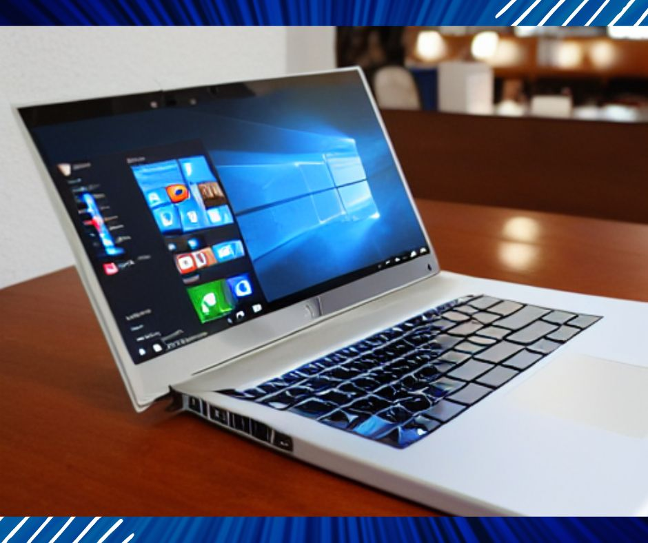

In daily life in the United States, the role of laptops is becoming more and more important. Whether it is watching dramas or working, it is indispensable to use laptops. Today I recommend the best laptops in the United States for everyone. There are various types below. Laptops for different purposes, there is always one that will suit you:
The best laptop Apple MACBOOK AIR (M2)
Features:
- Ultra-thin design—The redesigned MacBook Air is more portable than ever, weighing just 2.7 pounds. It’s a powerful laptop that lets you work, play or create anywhere, anywhere.
- M2 Supercharged — Get more done, faster with a next-generation 8-core CPU, up to 10-core GPU, and up to 24GB of unified memory.
- Up to 18 hours of battery life — day or night, thanks to the power-saving performance of the Apple M2 chip.
- Big, beautiful display—The 13.6-inch Liquid Retina display features over 500 nits of brightness, a wide P3 color gamut, and supports 1 billion colors for vivid images and incredible detail.
- Advanced Camera and Audio — Looks clear and sounds great with a 1080p FaceTime HD camera, three-microphone array and four-speaker sound system, and Spatial Audio.
- Versatile connectivity—MacBook Air features a MagSafe charging port, two Thunderbolt ports, and a headphone jack.
- Ease of use—From the moment you turn on your Mac, your Mac feels familiar and works seamlessly with all your Apple devices.
The latest MacBook Air with the Apple M2 processor is the best laptop for most people.
The base model includes 8GB of RAM, 256GB of storage, an 8-core CPU, and an 8-core GPU, and starts at $1,199. The model with 512GB of storage, the one we recommend to most people to keep you using your laptop for longer, is $1,399.
The Air has lost the wedge-shaped design that has been its calling card for years but has kept many of its other great features from years past, including MagSafe charging, Touch ID, and a scissor-switch keyboard, and added a new 1080p webcam and two new color options.
The M2 processor inside isn’t as fast or as powerful as the M1 Pro or M1 Max you get in the larger (and more expensive) MacBook Pro models, but it’s still pretty fast. In our tests, it was able to handle a heavy office workload with little heat or slowdown. Considering how thin and light this device is, it offers a combination of power and portability that you’ll be hard-pressed to find in many other machines.
The M2 Air’s battery life isn’t quite as long as the 16-inch M1 Pro MacBook offered in our battered test, but we still expect it to last most people through a full day of continuous use.
Apple continues to sell the M1 MacBook Air released in 2020. If the M2 MacBook Air is out of your price range, we recommend you consider the M1 model, which is listed below.
Apple laptops with super performance 2021 Apple MacBook Pro 14inch and 2021 Apple MacBook Pro 16inch
Features:
- Fast M1 Pro and Max processors
- Brilliant Liquid Retina XDR display
- magic keyboard
- Compatible with multiport
- SD card reader
- solid battery life
- great acoustics
Apple’s redesigned MacBook Pro with the new M1 Pro and M1 Max chips is exactly what media professionals have been waiting for. The processors are much faster than last year’s M1, they support up to 64GB of RAM, and both laptops feature XDR display technology borrowed from the iPad Pro. But Apple is also looking backward as it moves forward, reviving ports and adopting designs similar to many of its older machines.
Both laptops still look like MacBook Pros, with sleek, unibody aluminum casings. But get closer and you’ll notice some retro flourishes. They’re slightly thicker and have more rounded edges, reminiscent of Apple laptops from the 2000s. They’re also heavier than you might expect: 3.5 pounds for the 14-inch model, and between 4.7 and 4.8 pounds for the 16-inch model, depending on which chip you choose. That’s about half a pound heavier than the previous-generation 16-inch MacBook Pro.
All that weight isn’t in vain, though. Part of the reason is that it allows Apple to cram in more ports. Joining the three Thunderbolt 4 USB-C connections are a full-size HDMI port, a MagSafe power connection, a high-impedance headphone jack, and an SD card reader (cue the victory horn). Of course, you’ll still need adapters to connect older USB Type-A devices, but at least you can download photos and videos without extra equipment. You can still charge your laptop via USB-C – always useful in a pinch – but the MagSafe connection is less likely to cause accidental drops, and you don’t have to use the precious USB-C port to keep it powered.
They feature 14.2-inch and 16.2-inch Liquid Retina XDR displays, respectively. Mini-LED backlighting allows them to reach a peak brightness of up to 1,600 units, perfect for HDR content. The screen has a resolution of 254 pixels per inch, 3,024 x 1,964 on the 14-inch and 3,456 x 2,234 on the 16-inch. Neither is true for 4K (the 16-inch comes close), but you can still handle 4K and 8K video, just on a reduced scale.
Best of all, the MacBook Pro supports ProMotion, Apple’s technology that enables refresh rates of up to 120Hz. Once opened, scrolling through webpages and documents feels silky smooth. This is becoming more and more common in the laptop world. Promotion is also smart enough to lower the refresh rate when it makes sense, which goes a long way in saving battery life.
Apple hasn’t skimped on audio, either. Both MacBook Pros feature a six-speaker array consisting of two tweeters and four canceled woofers. In short, they sound amazing. Music played from both laptops sounded like I was listening to two small bookshelf speakers, the sound was transparent and the bass was punchy, which was brilliant.
So here comes the question, which one should you buy, 14 inches or 16 inches? If you’re using it primarily for general productivity tasks, then I’d lean toward the 14-inch model, which is easier to carry around. It’s a great option for coders and those who might not need a lot of screen real estate. But every video and audio producer I’ve talked to has an unambiguous choice: the 16-inch model.
Overall, these computers have pretty much everything we could want from a capable laptop. If you’re a creative professional with a big budget for a new computer and want something that really speeds up your workflow, the new MacBook Pro is just what you need.
Portable Apple laptop Apple MacBook Air (M1 Chip)
Features:
- Apple designed the M1 chip for a giant leap in CPU, GPU, and machine learning performance
- Up to 18 hours of battery life, longer than ever
- Its 8-core CPU has a 3.5x performance boost for unprecedented processing speed
- Faster graphics processor with up to 8 GPU cores and up to 5x faster graphics processing
- Ultra-fast SSD storage launches applications and opens files instantly
- Fanless design for quiet operation
- 13.3-inch Retina display with P3 widescreen color for vivid images and incredible detail
This new Apple MacBook Air (M1) is not only the best laptop Apple has ever made, but the best laptop you can buy right now. It’s No. 1 because of its revolutionary ARM-based Apple M1 chip that powers the new MacBook Air (Apple ditched the Intel processor), and it’s arguably a fantastic upgrade: a thin and light laptop even on the go. It also delivers great performance when editing 4K video, while also offering incredible battery life. It’s a super-powerful, thin laptop that easily manages over 11 hours on a single charge, so it’s also an ultraportable laptop you can take with you to work or school, and Its price is extremely competitive with Windows 10 competitors like the Dell XPS 15. Even if you’ve only used Windows laptops before, the MacBook Air (M1) is worth checking out and upgrading to macOS because of the processing power it offers.
BEST WINDOWS LAPTOP HP Specter x360 Luxury 14T
Features:
- Factory Sealed New – You will receive your laptop factory sealed brand new from HP, backed by a premium 1-year HP (manufacturer) warranty. You can buy with confidence that the advertised specs are factory installed.
- With outstanding performance, battery efficiency, and a stunning new design, the HP Specter 14T surpasses them all: 11th Gen Quad-Core CPU: Intel Core i7 – Intel Core i7-1165G7 (up to 4.7 GHz, 12 MB L3 cache, 4 cores) + Intel Iris Xe Graphics. WINDOWS 10 PRO-64-bit pre-installed by HP. Intel’s XE Graphics is the best Intel GPU yet and paired with 16GB of RAM and a super-fast 512GB NVME SSD, you really can’t go wrong. It offers great performance and better power management than ever.
- Stunning video and image quality with a 13.5-inch WUXGA touchscreen and 3:2 aspect ratio for optimal productivity: The HP Specter 14T x360 delivers stunning visuals and unmatched quality with its 1920×1280 display, even Outperforms FHD performance. Its 3:2 aspect ratio and 90.33% screen-to-body ratio let users do more. The HP Zenvo Tilt Pen with Magnetic Attachment is HP’s best pen yet, offering “tip precision” with smoother color transitions and enhanced response times.
- Premium aesthetics and security: Make a statement every time you use the HP Envy 14T Deluxe Touchscreen Laptop. Adaptive Color automatically adjusts hue, lighting, and ultra-vibrant colors to provide the best viewing experience for your environment. Smart Sense adapts to your work habits for optimal performance and includes in-pocket detection so it even knows when to take a break. Breakthrough security and privacy features include an unhackable physical camera shutter and fingerprint reader.
- Bang & Olufsen Speakers: Bang & Olufsen and HP have partnered to bring premium sound to your personal computing device. Bring entertainment to life with HP Quad Speakers, HP Audio Boost, and custom tuning from experts at Bang & Olufsen. Awaken your senses with the perfect PC audio. Ports: 2 x Thunderbolt 4 x with USB4 Type-C 40Gbps signaling rate (USB Power Delivery, DisplayPort 1.4, HDMI 2.0, HP Sleep and Charge). 1 x Headphone/Microphone combo.
- All-day battery: Stay unplugged for up to 10 hours with the 4-cell 66 Wh Li-ion prismatic battery and enjoy crystal-clear communications with the HP Wide Vision HD Webcam with dual digital microphones. Also included is a super sleek, super cool 64GB Slim Tech Depot LLC USB Flash Drive. A fast little actor who looks great! See the image illustration for more information. 1 x SuperSpeed USB Type-A 5Gbps signaling rate (HP Sleep and Charge).
It’s hard to have any complaints about the Specter x360 14. It’s a gorgeous machine with a solid build and a premium look and feel.
But the Specter x360 14 isn’t just good-looking: it’s also a joy to use as a daily work driver. Intel’s latest 11th-gen processors and Iris Xe integrated graphics delivered solid performance without the slowdowns or freezes we observed. Our devices averaged 10 hours of battery life—one of the best results we’ve seen.
On the outside, the Specter includes a spacious 3:2 display, with OLED and 1,000-nit options available if FHD resolution isn’t to your liking. There’s even a packaged stylus that attaches magnetically to the side of the Specter — handy if you’re using the device as a tablet. Almost every other aspect of this laptop, from the comfortable keyboard and smooth touchpad to the bass-heavy audio and useful port selection, matches or exceeds the best laptops on the market.
The best dual-screen laptop ASUS ZenBook Duo 14
Features:
- ScreenPad Plus: a 12.6-inch matte touchscreen that gives you unlimited ways to optimize your multitasking experience by extending the screen or splitting windows and apps across two displays
- 14″ FHD 400 nits NanoEdge Touchscreen Glossy Primary Display
- Latest 11th Generation Intel Core i7-1165G7 processor 2.8 GHz (12M cache, up to 4.7 GHz, 4 cores) with discrete NVIDIA GeForce MX450 graphics
- Fast storage and memory with 1TB PCIe NVMe M.2 SSD and 32GB LPDDR4X RAM
- Windows Pro and built-in infrared camera for facial recognition Sign in with Windows Hello
In the past, the dual-screen form factor was gimmicky, ugly, and difficult to use. But in the Zenbook Duo 14, Asus has angled the screen significantly higher than before, has a higher resolution, and has an anti-glare etch that makes it really useful.
Using Asus’ ScreenXpert software, Zenbook Pro Duo users basically have a small, sharp secondary OLED display on the keyboard deck. The second screen can also be turned into a giant touchpad (which is helpful because the actual touchpad included with the device is very small. The device also has high-performance chips from Intel and Nvidia and a spacious 16:10 main screen. While a front-facing keyboard layout isn’t for everyone, this innovative device is the best choice for shoppers looking to combine multiple screens into one.
Best laptop for gaming on the go: ROG Zephyrus 14
Features:
- AMD Ryzen 7 5800HS (8-core) processor, (2.8 GHz, up to 4.4 GHz max boost, 8 cores, 16 threads, 16 MB cache). Integrated AMD Radeon Vega 8 graphics. Windows 11
- 14″ FHD LCD Anti-Glare (1920 x 1080) 144Hz Display, 100% Srgb
- NVIDIA GeForce RTX 3060 6GB GDDR6 graphics card
- Thin and light design, only 0.70 inches thin. Gorgeous white. Backlit keyboard. Very nice laptop. Dolby Atmos. Shell material: aluminum, magnesium alloy (CNC), plastic. Built-in fingerprint reader.
- ROG Zephyrus G14 packs sophisticated connectivity. With two USB 3.2 Gen 2 Type-C ports and two USB 3.2 Gen 2 Type-A ports, the machine has excellent options for even high-speed peripherals.
We think this model is the best 14-inch gaming laptop you can buy. It’s a perfectly portable device, weighing just 3.79 pounds and 0.77 inches thick, and packs an excellent keyboard, touchpad, port selection, and screen.
Razer Book 13 Laptop, a sleek, powerful productivity laptop
Features:
- Slim, sleek, and ready to go: Razer Book 13’s ultra-compact 13.4″ 4K touch display on 4 sides, thin bezels, and lightweight CNC aluminum unibody design make it the perfect mobile companion to conquer everyday tasks
- Best-in-class 11th Gen Intel Core Mobile: Includes immersive graphics for deeper engagement, the ability to revolutionize workflows faster, and intuitive AI for more realistic collaboration
- Vapor Chamber Cooling System: Properly cooled system maintains high performance and 10+ hours of battery life for maximum productivity
- Plug and play, no dongle required: Connect at lightning speed with 2 x Thunderbolt 4, MicroSD slot, and full-size HDMI 2.0
- Intel Iris Xe Graphics for Crisp HD Quality: Perfect for the sleek form factor of the Razer Book 13, it delivers pixel-perfect productivity like having a dedicated graphics card that not only catches the eye but captivates it
Razer is best known for its gaming laptops, but the company is making a splash in the business and productivity arena with its new Razer Book 13. At 0.6 inches thick and 3.09 pounds, the Book 13 is a portable workstation with a gorgeous and sturdy aluminum build. It has a good selection of ports, including Thunderbolt 4, USB-A, HDMI 2.0, and a MicroSD slot, and it’s one of the very few non-gaming laptops on the market with a single-button RGB keyboard.
Inside, this laptop is even more impressive. Its powerful chip outperformed any other Windows laptop of its size in our Premiere Pro media export test. While the Book 13 isn’t a gaming laptop, it offers some of the best gaming performance I’ve seen with integrated graphics — it can even run Tomb Raider at over 30fps. While the Razer Book 13’s high price means it won’t be for everyone, it’s still an excellent laptop that combines a high-quality chassis with strong productivity performance.
Very Affordable Laptop Acer Swift 3 Thin & Light Laptop 14Inch
Features:
- AMD Ryzen 7 4700U Octa-Core Mobile Processor (up to 4.1 GHz) with Radeon Graphics | 8GB LPDDR4 RAM | 512GB PCIe NVMe SSD
- 14-inch FHD widescreen IPS LED-backlit display (1920 x 1080 resolution; 16:9 aspect ratio)
- Intel Wireless Wi-Fi 6 AX200 802.11ax | HD Camera (1280 x 720) | Backlit Keyboard | Fingerprint Reader
- 1-USB Type-C port USB 3.2 Gen 2 (up to 10 Gbps) DisplayPort via USB Type-C and USB charging, 1-USB 3.2 Gen 1 port (with power-off charging), 1-USB 2 .0 port and 1-HDMI port
- Just 0.63 inches thick, 2.65 pounds, and has up to 11.5 hours of battery life
With a sleek aluminum and magnesium-aluminum chassis, a great screen, and a long-lasting battery, the Swift 3 laptop is the perfect companion for the go-anywhere. This ultraportable laptop weighs just 2.6 pounds. It’s just 0.63 inches thin and features an AMD Ryzen 7 4700U processor and a long-lasting battery for increased productivity. The elegant silver chassis offers stunning graphics on its 14-inch Full HD IPS display for the most memorable multimedia experience. It’s arguably a good ultra laptop for the masses, and its affordable price, thin and light design, and decent battery life make it very popular.
A very popular gaming laptop Asus Rog Strix G15 Gaming Laptop, 15.6 inches 240hz
Features:
- NVIDIA GeForce RTX 2070 8GB GDDR6 with ROG Boost
- The latest 10th Gen Intel Core i7-10750H processor
- 240Hz 3ms 15.6″ Full HD 1920×1080 IPS type display
- 16GB DDR4 2933MHz RAM | 1TB PCIe SSD | Windows 10 Home
- ROG Aura Sync system with RGB keyboard, logo, and light bar
The ROG Strix G15 embodies a simplified design that delivers a powerful core experience for gaming and multitasking. Equipped with the latest 10th Gen Intel Core CPU and NVIDIA GeForce GPU for high FPS capabilities, it takes full advantage of the blazing-fast display. Its ultra-fast 240Hz refresh rate makes the flow of a game’s fast-paced action look impeccable, while its quick 3ms response time minimizes game motion blur so you can track your targets with precision. It can be said that it is a laptop that game lovers like.
An excellent 2-in-1 laptop HP Elite Dragonfly Notebook PC
Features:
- Impeccable design style
- excellent battery life
As far as 2-in-1 laptops go, the HP Elite Dragonfly tops our list for its combination of portability and power. It’s also one of the best-looking business laptops we’ve tested in a long time, with a thin and light design – with incredible speakers, a great keyboard, and an optional 550 nits 4K display that makes it stand out. Not only does the HP Elite Dragonfly have the security and IT features businesses need, but it also includes fast hardware, plenty of ports, and most importantly: an aesthetic that can’t be replaced. While it’s pricey, it’s well-suited for business use, and its LTE integration is something that makes this laptop a must-have for traveling professionals. If you’re always on the go, its lightweight design, always-connected LTE coverage, and fast internals make the Elite Dragonfly one of the best business 2-in-1 work laptops out there.
The best laptop for kids to learn Lenovo Flex 5 14″ 2-in-1 Laptop
Features:
- Thin, light, and sleek – this 2-in-1 laptop weighs just 3.64 pounds and is just 0.82 inches thick
- Soft and comfortable to the touch with a durable finish for a better user experience, including digital pens
- 14″ FHD (1920 x 1080) IPS touchscreen makes the Lenovo Flex 5 14″ 2-in-1 laptop comfortable, fun, and easy to use
- Up to 10 hours of battery life, plus fast charging to 80% in just 1 hour, makes it perfect for learning to use
This laptop is great for homeschooling, with powerful performance, a soft and durable keyboard, and a screen that supports touch input. Its price is also very affordable, it can be said that it is worth the money. Fit your lifestyle with this Lenovo Flex 5 14-inch 2-in-1 laptop. Thin, thin, and ultraportable, the Flex 5 weighs just 3.64 pounds and is less than an inch thick when closed. Slim, Stylish, and Proud With an AMD Ryzen™ 5 4500U Mobile Processor with Radeon™ Graphics, you can take this touchscreen laptop anywhere you go – digital pen included. Designed for outstanding all-around performance, graphics, and productivity, the Flex5 is perfect for entertaining at home, working in the office, or studying at home.
Best overall laptop performance Dell XPS 15
Features:
- The nearly bezel-less 15.6-inch display
- CinemaColor visuals bring the screen to life like the world around you
- Advanced Connectivity The Thunderbolt 3 multipurpose port lets you charge your laptop, connect to multiple devices (including support for up to two 4K displays) and enjoy data transfer speeds of up to 40Gbps, which is 8x faster than USB 3.0. It also includes two USB 3.0 ports
- The new XPS 15 webcam is not only smaller, but it also looks better. Higher megapixel count compared to typical webcams, especially in dim conditions
- With advanced Wi-Fi 6 wireless communication technology, the theoretical throughput speed is as high as 2.4 Gbps, which is almost three times that of the previous generation 80MHz 2×2 AC products
Configuration:
- Processor: 9th Generation Intel Core i9-9750H
- Display: 15.6-inch 4K UHD (3840 x 2160) InfinityEdge anti-reflective touch IPS 100%a RGB 500-nits display
- Graphics Card: NVIDIA GeForce GTX 1650 4GB GDDR5
- Memory: 32GB DDR4-2666MHz
- Hard Disk: 1TB PCIe Solid State Drive
- OS: Windows 10 Home Edition
- Ports and Slots: 1. SD Card Slot | 2. USB 3.1 Gen 1 | 3. Battery Gauge Button and Light | 4. Wedge Lock Slot | 5. AC Power | 6. USB 3.1 Gen 1 | 7. HDMI 2.0 | 8. Thunderbolt 3 (4 lanes of PCI Express Gen 3) | 9. Headphone jack
This notebook has a very good and exquisite design, it is exquisite from the inside to the outside, its shell is made by CNC machine process, so it has a very strong and scratch-resistant surface, and its body is very slim, it is A very lightweight and portable 15-inch high-performance notebook computer. It has an ultra-high-definition 4K display (3840 x 2160), allowing you to see every tiny detail in the image without zooming in.
With 6 million more pixels than a full HD display, you can edit images with ultra-precise precision without worrying about blur or jaggies. Featuring a 100% Adobe RGB color gamut, the XPS 15 covers a wider color gamut, delivering vivid color gradations beyond the reach of traditional panels, allowing you to enjoy more lifelike visuals. In addition, more than 16 million colors are supported, the image rendering is smoother, the color gradient effect is more realistic, and the picture has more depth and dimension. Built-in Dell PremierColor software automatically remaps non-Adobe RGB content for remarkably accurate, true-to-screen color.
This notebook is also perfect for gamers, as it features powerful 9th Gen Intel® Core™ processors that provide gamers and creators with exceptional features, and its graphics card NVIDIA® GeForce® GTX 1650 GPU delivers powerful performance. Accelerate applications to achieve higher performance and faster speed in video editing, graphic design, photography, and game playback. It has 32 GB of internal memory with a bandwidth of 2666 MHz. Faster memory speeds mean you get what you need faster. Storage capacity up to 1TB solid-state drive, using the faster PCIe version, provides ample storage space and ultra-high-performance responsiveness, allowing you to quickly access and run applications, and you can start your computer to work in seconds so that you don’t need to wait, and the efficiency is very high.
Its wireless network technology Killer AX1650 adopts the most advanced Wi-Fi 6 technology, with a theoretical throughput speed of up to 2.4 Gbps, which is almost 3 times faster than the previous generation of 80 MHz 2×2 AC products. It prioritizes streaming video, communication, and gaming traffic on your system for fast, smooth surfing.
The most popular 13-inch laptop HP Specter x360-13t Quad Core
Features:
- Latest 8th Generation Intel Core i7-8550U (1.8 GHz base frequency, up to 4 GHz with Intel Turbo Boost Technology, 8 MB cache, 4 cores) + Intel UHD Graphics 620 (16 GB) memory, Windows 10 Home 64, natural silver appearance
- HP TrueVision FHD Infrared Camera with Dual Array Digital Microphones, Webcam Supports Windows Hello
- 13.3″ diagonal FHD IPS micro-edge WLED-backlit touchscreen from HP Active Stylus
- Intel 802.11b/g/n/ac (2×2) Wi-Fi and Bluetooth 4.2 Combo, Bang & Olufsen, Quad Speakers, HP Audio Boost, HP Imagepad with multi-touch gesture support
Configuration:
- Processor: Intel Core i7
- Display resolution: 1920×1080
- Graphics card: Intel UHD Graphics 620
- Memory: 16GB
- Hard Disk: 512 GB SSD
- Operating system: Windows 10
- Wireless Type: 802_11_AC
- Battery life: 16 hours
This 2-in-1 laptop has a very good look and is very functional. The x360’s flexible hinge lets you place the laptop in work PC mode or tablet mode. The hinge is so strong that it won’t wobble even if you bang the screen hard. The Specter x360 13 has the same great keyboard as the previous model. The Specter x360’s keys are large and well-spaced, providing a decent typing experience for such a thin laptop.
Its battery life is strong, and the HP Specter x360-13t outlasts both Lenovo’s 2-in-1 Yoga C930 and Dell’s XPS 13 2-in-1.
Its disadvantage is that the quality of the pictures and videos captured by its camera is not very clear, but its camera has a privacy protection function switch. After turning off the function of the camera, you don’t have to worry about hackers invading your camera. Due to its relatively compact body, its heat dissipation effect is not very good compared with other notebooks. When watching videos, after a while, you will find that the body is a bit hot.
But despite the above shortcomings of this notebook, overall it is a very good 13-inch 2-in-1 laptop. And if battery life is more important to you, it is a good choice to choose it.
The most popular 16-inch laptop New Apple MacBook Pro
Features:
- Ninth Generation 6-Core Intel Core i7 Processor and Stunning 16″ Retina Display with True Tone Technology
- Six-speaker speaker system makes for excellent sound quality
- AMD Radeon Pro 5300M graphics and Intel UHD Graphics 630 with GDDR6 memory
- Ultra-fast SSD, four Thunderbolt 3 (USB-C) ports
- Up to 11 hours of battery life
- Support wireless 802.11AC Wi-Fi
Configuration:
- Processor: 2.6GHz six-core Intel Core i7, Turbo Boost up to 4.5GHz, with 12MB shared L3 cache
- Display: 16.0-inch (diagonal) LED-backlit display with IPS technology; 3072×1920 native resolution, 226 pixels per inch, supporting millions of colors
- Graphics: AMD Radeon Pro 5300M with 4GB of GDDR6 memory and automatic graphics switching, Intel UHD Graphics 630
- Ports: Four Thunderbolt 3 (USB-C) ports that support: Charging, DisplayPort, Thunderbolt (up to 40 Gbps), and USB 3.1 Gen 2 ports (up to 10 Gbps)
- Wireless type: Wi-Fi, 802.11ac Wi-Fi wireless network; Compatible with IEEE 802.11a/b/g/n, Bluetooth 5.0 wireless technology
- Included in the box: One 16-inch MacBook Pro notebook, one 96W USB-C power adapter, one USB-C charging cable (2 m)
The 16-inch MacBook Pro is the most powerful MacBook notebook computer in Apple’s history. It inherits the simple, elegant, and stable workmanship of traditional Apple computers. It’s gone from the butterfly keyboard back to the scissor keyboard, which Apple says is more springy to the touch and less stiff than before. It has 6 speakers, which makes its sound quality more vigorous and the effect of bass is more obvious.
Its internal components have also been further upgraded, and the AMD Radeon Pro 5300M graphics card makes the debut, which makes this notebook extra attractive, which makes it more powerful for image editing. A built-in microphone makes the 16-inch MacBook Pro a capable mobile notebook without the need to plug in too many external devices. Coupled with the thin and light design of the MacBook, it is also very convenient to move and carry.
In daily use, its operating system is very smooth, can run and process applications quickly, and its noise is very small, maintaining an amazingly quiet sound, which must be attributed to the excellent cooling design of Apple computers, The picture, and sound quality have a very good experience.
ASUS TUF Dash 15 Gaming Laptop ASUS TUF Dash 15
main feature:
- NVIDIA GeForce RTX 3050 Ti 4GB GDDR6 up to 1585MHz at 60W (75W with Dynamic Boost 2.0)
- Intel Core i7-11370H processor (12M cache, up to 4.8GHz)
- 15.6″ 144Hz IPS Full HD (1920×1080) display with Adaptive Sync
- 8GB DDR4 RAM | 512GB PCIe NVMe M.2 SSD | Backlit Precision Gaming Keyboard | Windows 10 Home
- 0.8-inch thin, 4.4-pound ultra-portable form factor
If lightweight and portability are your things, you’ll love the 15.6-inch ASUS TUF Dash 15 Laptop. It’s only 0.8 inches thin and weighs 4.4 pounds. You can take it to game events without back pain! This powerful computer is powered by an Intel Core i7-11370H processor, 8GB of RAM, 512 SSD, and GeForce RTX Ampere graphics. The combination of a 144Hz refresh rate and Adaptive-Sync technology ensures your games are smooth and judder-free. Bonus: The display is FHD, which makes the colors and details really come to life.
Best laptop for everyday use HP 15 HD Touchscreen Laptop
Features:
- 10th Generation Intel® Core i5-1035g1 Processor Quad Core 1.0 GHz base frequency, up to 3.6 GHz with Intel Turbo Boost Technology
- 15″ Diagonal HD SVA Bright View Micro-Edge WLED Backlit Touch Screen Display
- SSD solid state drive makes it very fast to boot up and run programs
- Very light and easy to carry
Configuration:
- Processor: 10th Gen Intel Core i5-1035G1
- Display resolution: 1366 x 768
- Memory: 16GB
- Hard Disk: 512 GB SSD
- Operating system: Windows 10
- Wireless Type: 802.11.ac and Bluetooth
This notebook is very cost-effective, and its configuration is one of the best in the same price range, and it can be used in daily life. It is also a very good choice for students because its cost performance is relatively high.
The best laptop for business: Microsoft Surface Pro 8
Features:
- The power of this laptop has the flexibility of a tablet, and every angle in between, with a 13-inch touchscreen, signature built-in kickstand, and detachable keyboard.
- Windows 11 gets the job done with a fresh feel and tools that make it easier to be productive.
- The first Surface Pro was built on the Intel Evo platform. Get it all with the Intel Evo platform – thin and light PC performance, graphics, and battery life.
- Great pen experience on the Pro, with the rechargeable Surface Slim Pen 2 and Surface Pro 8 for the natural feel of a pen on paper.
- Comfortable typing with sleek lines and a small footprint, the Surface Signature Keyboard performs like a traditional laptop keyboard with a full-function row and backlit keys.
Configuration:
- Display: 13″ screen (2880 x 1920)
- CPU: Intel i5-1135G7 or Intel i7-1185G7
- GPU: Intel Iris Xe Graphics
- Memory: 8GB | 16GB | 32GB
- Storage: 512GB | 1TB (128GB or 256GB removable SSD options)
The Microsoft Surface Pro 8 is the latest in the company’s line of 2-in-1 Surface Pro tablets. This iteration includes an 11th-generation Intel CPU, a 13-inch 120Hz display, two Thunderbolt 4 ports, and a removable SSD. Just as important, this 2-in-1 gets you Windows 11 in no time.
Its small size and lightweight design make the Surface Pro 8 perfect for use at home or on the go. The front and rear cameras are also great, delivering images with sharp details. It is very suitable for mobile office use because its convenience is very strong. The device is great for everyday use, and we love how well its touch-friendly Windows 11 operating system works with this machine. The front and rear cameras are also great, delivering images with sharp details. It measures 11.3 x 8.2 x 0.37 inches and 1.96 pounds, and its compact and lightweight design makes it a suitable portable device.
It has a power button, two Thunderbolt 4 USB-C ports, and a Surface Connect port on the right side of the Surface Pro 8. You’ll find volume buttons and a 3.5mm headphone jack on the left. You can connect displays, external hard drives, and GPUs to Surface Pro 8.
The Surface Pro 8 features a 13-inch PixelSense touchscreen display with a resolution of 2880 x 1920 pixels and a refresh rate of 120Hz. It also features Dolby Vision and Adaptive Color technology. The display averaged 452.8 nits of brightness, reaching 444 nits around the center of the screen. That’s close to the peak 450 nits Microsoft advertises for the Surface Pro 8. Images are clearly visible in both bright and dim environments. Overall, the Surface 8 Pro is arguably the best Surface Pro yet.
The most popular 17-inch laptop LG Gram Laptop
Features:
- 17-inch WQXGA (2560 x 1600) IPS LCD screen
- Windows 10 Home Edition (64bit)
- Intel 10th Generation i7-1065G7 CPU with Iris Plus Graphics
- 16GB DDR4 memory and 1 TB SSD M 2 NMVe SSD (512GB x2)
- 80WH lithium battery (up to about 10 hours)
Configuration:
- Processor: Intel 10th Gen Core i7 1065G7
- Display resolution: 2560 x 1600
- Memory: 16GB
- Hard Disk: 1TB M.2 NVMe SSD
- Operating system: Windows 10
- Battery type and battery life: 80WH lithium battery, battery life of up to 10 hours
- Wireless Type: 802.11.ac and Bluetooth 5.0
Among the 17-inch notebooks, its features and advantages stand out because of its lightweight design, long battery life, and outstanding task-handling capabilities. Its appearance looks ordinary, not amazing. Although Gram 17 does not look great, it is indeed very practical. It has a wide range of port options, including Thunderbolt 3, HDMI, 3x USB, a miniSD slot, and a headphone jack, which is very convenient.
Its keyboard has a nice tactile feel and is quiet enough not to bother those around you. Moreover, the orange shortcut keys on its keyboard are very eye-catching, and it is very convenient and quick to use. It has a larger battery and a stronger processor than the previous-generation LG Gram 17, and the picture quality has also improved over the previous generation, and the contrast ratio is also high at 1550:1, making bright and punchy colors even more vivid. The screen is very shiny, but it can sometimes be off-putting because the lights from the ceiling shine on the monitor, so you should avoid using this computer outdoors, especially on sunny days, as the reflections on the screen make it difficult to see.
Its downside is that the graphics card can’t handle some gaming needs, but if you’re looking for a laptop with a large screen for web browsing, watching videos, and simple office tasks, it’s a good choice.
ASUS ROG Strix Scar 17 Gaming Laptop, a laptop that can replace a desktop
Features:
- 17-inch WQXGA (2560 x 1600) IPS LCD screen
- The latest 10th Gen Intel Core i7-10875H processor
- 300Hz 3ms 17.3-inch full HD 1920×1080 IPS display
- NVIDIA GeForce RTX 2070 Super 8GB VRAM, 1TB PCIe SSD
This laptop is powerful, its design is excellent, and it has a 300Hz IPS full HD display, whether it is gaming or work, it is perfectly capable. It’s quieter and friendlier when used in conjunction with everyday multitasking and casual tasks compared to the previous generation, with 10-20% faster gaming and workloads in those that can benefit from the GPU’s extra CUDA cores and vRAM applications, the speed is even faster. Best of all, this is also quieter in games than the previous generation, so much so that you can play games without headphones.
ASUS ZenBook 13 Ultra-Slim Laptop
Features:
- 13.3 inches FHD 1920X1080, 16:9 anti-glare NTSC, 72% wide field of view 4-way NanoEdge bezel display
- Latest 10th Generation Intel Core i5-1035G1 Core Processor (6M Cache, up to 3.6 GHz) with Intel UHD Graphics
- Windows 10 Pro
- Fast storage and memory with 256GB PCIe NVMe SSD and 8GB LPDDR4X RAM
- Built-in infrared camera for facial recognition login with Windows Hello
It’s also incredibly thin and light, with a sleek design that’s a joy to carry around and use. It’s also quite priced compared to rivals like the Dell XPS 13. The only downside is the lack of a headphone jack – which is a bit of a shame, but probably due to its slim design, nonetheless this is an excellent slim laptop and well worth considering. The beautiful new ZenBook 13 is more portable than ever. It’s thinner, lighter, and remarkably compact, but includes HDMI, Thunderbolt 3 USB-C, USB Type-A, and a MicroSD card reader for unrivaled versatility. ZenBook 13 is designed to deliver powerful performance, perfect for effortless travel.
Best portable Lenovo laptop Lenovo ThinkPad X1
Features:
- Stylish and convenient design
- Bright 13-inch 2K display
- 2 lbs
- Has an excellent battery life
- The keyboard feels very good
If you like the size and weight of the MacBook Air, but prefer the keyboard and Windows-based features of the ThinkPad, then the X1 Nano is for you. It’s thin and light (just under 2 pounds), but it has the ThinkPad pedigree—a great keyboard, red nubs, and buttons on top of the trackpad. Unfortunately, it also adopts the Air’s shortcomings: ports are limited to two USB-C and a headphone jack.
The screen is an unusual 2,160 x 1,350 pixels, sharper than the base Dell XPS 13, but not as sharp as the 4K option. I found it sharp and bright enough to stare at all day without eye strain. Battery life is great, too; it lasted about 17.5 hours on my battery rundown test, five hours more than the XPS 13.
What is the difference between a mechanical hard drive and a solid-state drive in a laptop?
Mechanical hard drives generally have large capacities and low prices, but their read and write speeds and processing speeds are relatively slow. The capacity of solid-state drives is relatively small, but the price is expensive, but the reading and writing speed and processing speeds of solid-state drives are faster than mechanical keyboards. You will find that when using solid-state drives, the speed of entering the system and booting speed is significantly improved.
Does the fact that the laptop is not hot mean that the cooling is good?
The fact that the laptop is not hot does not necessarily mean that the heat dissipation is good, because the temperature of the keyboard of some laptops is well controlled, and you cannot feel the heat. A notebook with good heat dissipation can handle tasks under high load and still keep the CPU temperature low, and can run programs at a higher speed. Another point that needs to be pointed out is that the loud noise of the notebook fan does not mean that the cooling function of the notebook is poor.
Related Article: How To Take A Screenshot on ASUS Laptop
Which operating system is better for Windows, Mac, or Chrome?
Windows:
Whether browsing the web or using Word, Windows is familiar and easy to use. Plus, it’s available on laptops from a wide range of manufacturers, so you can choose what works for you, such as 2-in-1 or tablet mode.
PCs typically run Windows as an operating system, which is much more open than MacOS and is updated more frequently. There is much more software for Windows. Windows in particular are the standard for game development and many business-related programs.
Windows-powered devices come in all shapes and sizes. Standard laptops with clamshell designs and keyboard-mouse interfaces are easy to find. Touchscreen Windows laptops can be found even in lower price ranges, in more refined designs that include fold-back screens, or even detachable tablet-keyboard combos, like Microsoft’s Surface Book line. Windows laptops also typically come with touchscreens, something you won’t find on any of Apple’s MacBook products unless you count the Touch Bar.
There are plenty of options for Windows laptops compared to Apple’s more limited hardware lineup. Whether you choose a major manufacturer such as Lenovo, or Dell, or one of Microsoft’s own devices, you have plenty of options for laptops with Windows.
Mac OS:
It runs exclusively on Apple laptops and desktop computers and is intuitively designed for ease of use. And, if you already own an iPhone or iPad, the two will work neatly in sync.
Apple has always protected its brand and released products in a very cautious manner. Any Apple product will follow its standards, while any manufacturer can build a PC with unique specifications. Therefore, Mac is very easy to use. No matter which MacBook you buy, Apple will tell you exactly what features you’re getting, and since all Macs come from the same ecosystem, the company’s well-resourced support network can easily resolve any issues that arise.
The high-quality design is one of the hallmarks of the Mac. They look and feel elegant. This extends to macOS, Apple’s operating system, which is as simple as it is intuitive. Macs also come with a suite of proprietary software pre-installed, and each application is well-suited for tasks like editing video or music. While there’s no touchscreen on the Mac, if you really need one to get things going, you can use Apple’s Sidecar mode to essentially switch control to the iPad.
Macs also use fast hardware, so people who want a solid computer but aren’t hardware savvy can rest assured that their Mac will perform well in day-to-day use. That said, they don’t tend to use the most powerful graphics chips, and tend to be much more expensive than their Windows and Chrome OS counterparts, especially when configured with a lot of storage. Apple computers aren’t cheap.
In many ways, Apple’s rigorous design standards mean that its products are easily accessible and usable by anyone, regardless of one’s skill level or familiarity with computers. On the other hand, the rigid design of the Mac means less freedom to customize the device. Available hardware is what you get. Plus, Apple only sells a few different models of MacBook at any given time, and occasional hardware updates mean they’re not always up to date.
In 2020, Apple updated the Macbook with a new butterfly keyboard that many fans have been craving. The latest lineup includes the 13-inch MacBook Pro and 16-inch MacBook Pro, as well as a new MacBook Air model.
Built around Google’s online services, use online apps to get work done and then save it securely online. Only for lightweight Chromebook laptops.
Google’s Chrome OS is a little different than the other two major products. It serves “Chromebook” laptops and is based on Google’s Chrome browser. That means it can’t run desktop apps like the other two platforms. If you’re the kind of PC user who just needs a laptop to read email, watch Netflix, and play some mobile games occasionally, it’s for you. It’s not the best choice if you want all the features a desktop platform has to offer.
What is the ideal screen size for a laptop?
The ideal screen size for a laptop is 15.6 inches. It offers plenty of viewing comfort and is easy to carry. Anything over 15.6 inches can make your laptop heavy and difficult to carry around. If you’re looking for portability, there are smaller screen options, like 11.6 inches to 14 inches. The largest screen measures about 17.3 inches.
A little terminology knowledge about laptops:
CPU – Central Processing Unit is another name for a processor
BIOS – Basic Input/Output System is the firmware of a computer. Its main function is to identify and initialize various motherboard components. It also loads and transfers control to a small program, which then loads the operating system.
OS – Operation System The operating system (OS) is one of the most important components of a computer. The operating system performs basic tasks such as recognizing keyboard input, sending output to the monitor, keeping track of files and directories on the hard disk, and controlling devices such as CD-ROM drives and printers. The operating system also manages how the computer accesses available networks.
RAM – Random Access Memory (memory) is the internal memory that exchanges data directly with the CPU.
SSD – Solid State Disk (Solid State Drive) is a computer storage device that uses flash memory as permanent storage. The hard disk is the main storage unit of the computer and the main carrier for storing the operating system, application programs, files, and data.
Video Card – The purpose of the graphics card is to convert the information that the computer needs to display to drive the display, and submit the signal to the display so that the display can display images. It is mainly responsible for the task of displaying graphics. For friends who like to play games or engage in graphic design, the role of the graphics card is very important.
Related Article: How to measure laptop screen size
US laptop buying guide
Whether you want to play games, watch movies, catch up on TV series, edit images, and videos, or work on the go, a laptop that is right for you can help you strike a balance between its portability and the functionality you need. We can consider the following points to choose which one is most suitable for you:
1. Decide the main purpose of your laptop purchase:
How to choose the most suitable notebook for you, first of all, what is it mainly used for? Generally, there are 4 requirements:
- Light use: Use it to surf the web, pay bills online, check email, browse social media sites, store photos, edit text, etc.
- General use: Store music and movies, watch movies, watch dramas, create spreadsheets, word, excel, PowerPoint, ppt, etc.
- Slightly higher requirements: Can handle multiple applications at the same time, play some small games, and process pictures and videos.
- Higher requirements: Can play large-scale online games, with high resolution and faster processor, larger memory, and advanced graphics card.
After determining your own needs, you can decide to buy a laptop with the corresponding configuration according to your use, so that you can have a general selection direction in mind.
2. Look at the appearance and keyboard of the laptop:
You can use the appearance of the notebook to see whether it is the one you like. Choosing a more solid appearance can prolong the service life of the notebook computer. You can check whether it has enough key spacing to see if you like its keyboard layout. If you have large hands, try to choose a layout with a spacious keyboard, which will make typing easier.
3. Look at its operating system:
Generally, there are three operating systems for laptops: macOS, Windows, Chrome OS
The operating system is the most important core of a laptop. It manages all software and hardware including files, memory, and connected devices. Most importantly, it enables you to visually communicate with your laptop and programs.
Apple OS :
Installed exclusively on Apple computers, macOS has a very elegant and easy-to-use interface, it has a sleek look and impressive battery life. Macs have historically had relatively few problems with viruses and malware. However, MacBooks start at a higher price than other laptops, and to date, no Mac models include touchscreen functionality.
Windows OS :
Windows is designed for an intuitive touchscreen interface (although it can be used with a traditional mouse and keyboard), thus expanding the options available to us. The integrated Windows Hello feature allows us to log in quickly using look or touch instead of a password while keeping our privacy safe. It also offers an updated task manager, simplified file management, and a suite of built-in apps.
Some Windows PCs come with Windows Ink, allowing you to use a compatible pen accessory (which may be sold separately) to write or draw on the display and communicate with various Windows Ink-enabled applications.
Chrome OS operating system:
Chrome OS is a fast, simple, and highly secure operating system that powers every Chromebook. It has the latest software updates and virus protection, and it automatically updates every 6 weeks.
4. Look at the size and function of the laptop screen:
4.1 Check if it has touch screen function :
Laptops with touchscreen capabilities can make navigating your computer more intuitive and faster. Just like on a smartphone or tablet, you can tap to select, hold and drag to move items, swipe to scroll, and pinch to zoom. It’s available on many Windows laptops and some select Chromebooks.
4.2 Look at the size of its display:
The screen size of a laptop is approximately 11 to 17 inches (measured diagonally). The larger screen is great for gaming, watching movies, editing photos and videos, and viewing and editing documents. Be aware, however, that a larger screen will increase the overall size, weight, and power consumption of the battery on the laptop.
4.3 Look at the resolution of its display:
Higher resolution equals better image quality. Laptop screens come in a variety of resolutions (in pixels, horizontal x vertical):
4K Ultra HD: 3840 x 2560 and 3840 x 2160 resolutions have four times the pixels of Full HD to create rich colors and images for viewing and editing incredibly realistic images and graphics.
QHD (Quad HD) and QHD+: Available in 2560 x 1440 and 3200 x 1800 resolutions, the extreme pixel density produces crisp detail and crisp text, ideal for professional photo and graphic work as well as HD movies and games.
Retina display : Apple’s 12-inch, 13.3-inch, and 15.6-inch laptop displays feature 2304 x 1440, 2560 x 1600, and 2880 x 1800 resolutions, respectively.
Full HD: 1920 x 1080 resolution lets you watch Blu-ray movies and play video games without losing any detail.
HD+: 1600 x 900 resolution is perfect for casual gaming and watching DVD movies.
High Definition: 1366 x 768 resolution is standard for mainstream laptops. Good for surfing, email, and basic tasks.
4.4 Look at its display type:
Different display technologies produce different colors and brightness levels. Many laptops feature LED backlights, which can display bright colors without draining the battery. If you plan to use your laptop to watch movies or video shows with friends, choose a monitor with an IPS panel for a wider viewing angle. Screens with a glossy finish typically deliver richer colors and deeper blacks, while a matte display reduces glare if you’re often working outdoors or near a window. Laptop models with narrow bezels (screen bezels) provide more display of real estate and appear to have a slightly larger screen.
5. Look at its CPU processor:
A laptop’s processor is like its brain. Combined with system memory, the power of the processor determines the complexity of the software you can run, how many programs you can have open at the same time, and how fast those programs run. Most laptops are generally equipped with Intel® or AMD processors.
Processors vary across desktop and notebook types, as notebooks designed for longer battery life often feature ultra-low voltage versions of the listed processors, often at the expense of processing speed.
For heavy graphics work or heavy gaming, it’s best to choose a laptop with an advanced graphics card and video memory. Watch movies, play games, or perform multiple tasks more smoothly with a discrete graphics card.
Intel® Processor:
Intel’s processors are at the heart of every modern MacBook and most Windows laptops. The most popular are Intel’s Core™ series of multi-core processors:
Core X-Series: Intel’s ultimate processor for gaming and virtual reality experiences. The Core X-Series family offers up to 18 cores and 36 threads to support the creation, editing, and production of 4K or 360° video, high-resolution photos, and high-quality audio.
Core i7: Popular choice for “power users” such as hardcore gamers, graphic designers, photographers, and videographers. It excels at serious multitasking and demanding multimedia creation for 3D or HD projects.
Core i5: A mid-level Core processor is powerful enough for most computing tasks and has multitasking capabilities so you can run several apps at once.
Core i3: An entry-level Core processor, enough for daily email, surfing the Internet, and browsing social networking sites. Also suitable for everyday activities like listening to music.
AMD processor:
The most common types of AMD processors are as follows:
Ryzen 7: For heavy-duty performance, including editing video, running demanding apps, and playing the latest games and online esports at smooth frame rates.
Ryzen 5: All-round multimedia performance for 4K video streaming, light video editing, and eSports gaming.
Ryzen 3: Responsive and efficient, maximizing battery life while delivering performance for common everyday use and learning tasks as well as entertainment.
AMD FX and A series: The main performance of these processors is to make the computer run faster and more responsive.
FX, A12, and A10: Advanced features combine powerful processing power and energy efficiency for an exceptional PC experience, including smooth online gaming and streaming.
6. Look at its memory:
Your computer’s memory is very important because it helps your processor multitask. A basic laptop needs at least 2-4GB, but if you’re doing graphics and advanced photo or video editing, at least 8GB is recommended. Most laptops come with 4GB–8GB pre-installed, some with up to 64GB installed. If you think you might need more memory later, choose a model with expandable RAM.
You can view laptops with different memory: 8G memory, 12G memory, 16G memory, 32G memory, or 64G memory.
7. Look at its hard disk:
Traditional hard drives have greater storage capacity, but add weight and thickness to laptops, while generating heat and noise. However, solid-state drives (also known as SSDs or flash memory) are lighter, faster, cooler, and quieter than hard drives. But they’re much more expensive than traditional hard drives, so they typically offer less storage space. Some laptops have hybrid drives, which combine a hard disk drive and a solid-state drive, giving you the best of both worlds.
Traditional Hard Drives:
Traditional mechanical hard drives are the most common type of storage because they are relatively cheap and have huge capacities. However, they also add significant weight and thickness to the laptop and generate heat and noise. They come in two standard speeds: 5400 rpm drives are sufficient for daily web browsing, emailing, and document creation, but 7200 rpm drives can transfer data much faster and might be worth considering if you’re dealing with large files on a regular basis.
Solid State Drives:
Solid state drives (also known as SSDs ) (or “flash memory” in Apple’s case) are many times faster than hard drives but typically have much smaller capacities. SSDs also offer huge advantages in physical size, weight, and power efficiency, with negligible heat generation and negligible operating noise, making them ideal for ultrathin, ultraportable laptops. And unlike hard drives, SSDs have no moving parts to wear out. Some laptops use SSDs for all storage. Some laptops specifically use a smaller SSD to house the operating system and applications (for faster boot times), and add a traditional hard drive for traditional data storage.
8. Look at its port and network connection performance:
Laptops often come with options for staying connected to the internet as well as other devices. Most laptops offer the latest 802.11 wireless networking standard as well as Bluetooth capabilities, so you can easily sync up with smartphones, speakers, and other portable devices. Some computers will support the latest WIFI6 wireless network standard. Of course, you need a WiFi6 router to support the operation of the network.
The most common notebook ports are the following:
USB Type-A: Connect external drives, game controllers, smartphones, MP3 players, and other accessories. USB 3.0 ports transfer data faster than USB 2.0, but only when used with USB 3.0 devices.
USB Type-C: Provides super-fast speed and versatile power, with identical connectors on both ends that can be plugged upside down or straight up. The adapter allows for video as well as backward compatibility with Type-A ports.
Thunderbolt: Ultra-high bandwidth for fast data transfers between devices with Thunderbolt or MiniDisplayPort connections.
HDMI: Can be used to connect TV or projector.
Media card slot: Used to transfer pictures from a digital camera or camcorder.